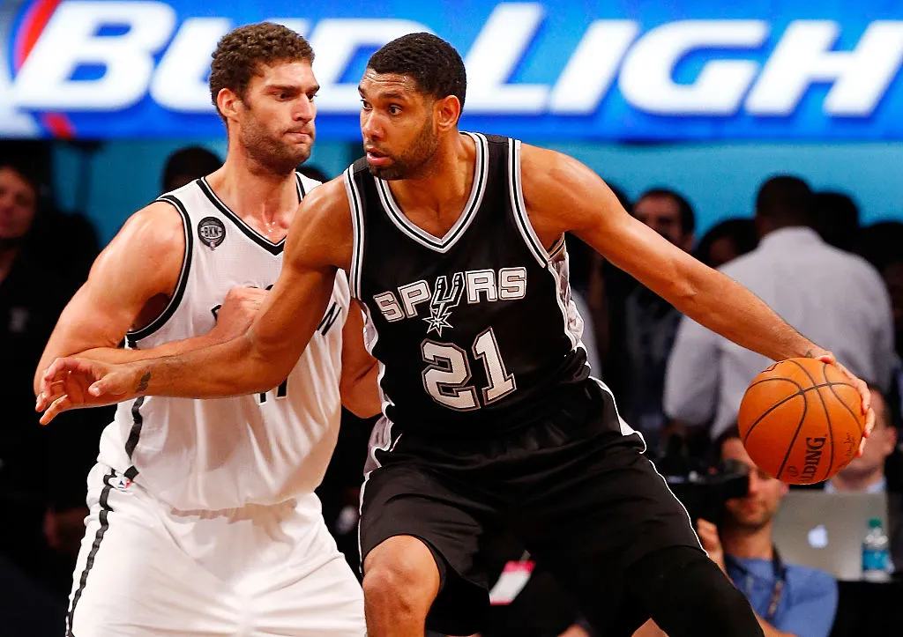
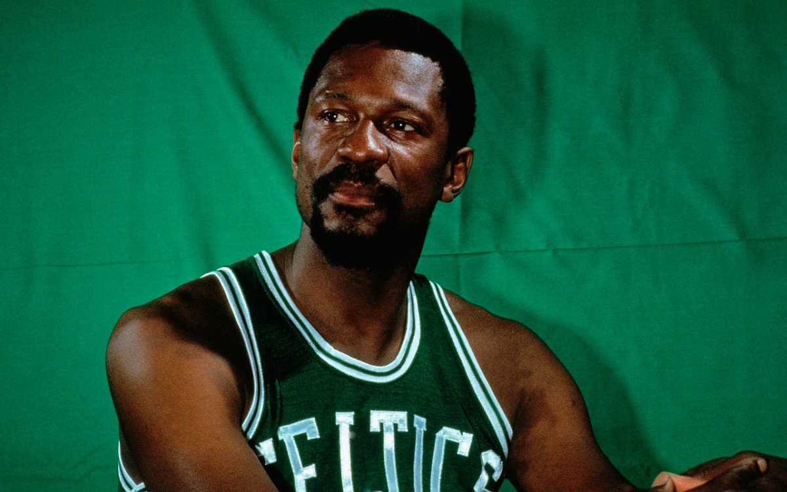

10- shaquille o'neal
Sem sombra de dúvidas, é uma das figuras mais icônicas do basquete. Shaq sempre será lembrado por como era dominante no garrafão. Com os seus 2.16 m e mais de 100kg, o pivô é o 8º maior pontuador da história da liga, com 28.596 pontos. Além disso, soma incríveis 13.099 rebotes, o 12º no ranking da NBA.Além dos grandes números, o grandalhão foi três vezes o MVP da temporada, uma o MVP das finais e tem quatro anéis da maior liga de basquete do mundo. Shaquille O'Neal não poderia ficar de fora desse top 10, porque representa muito para o esporte. Muitos lembram do personagem fora das quadras, no entanto era um monstro dentro do ginásio.
9- Tim Duncan
Sem sombra de dúvidas, é o homem mais amado de Santo Antônio. O que Tim Duncan jogou durante suas 19 temporadas pelo Spurs foi brincadeira. Foi All Star em 15 seasons. O ala-pivô se destacava pelas grandes enterradas. Com dribles rápidos, o craque interceptava facilmente a defesa adversária e conquistava o sorriso dos fã do San Antonio Spurs. Além disso, o ídolo soma cinco títulos de NBA em sua carreira. Em 1998, foi eleito o Rookier of The Year. Assim, já mostrava que era um atleta gigantesco. Junto com Tony Parker e Manu Ginóbili formou um grande trio que trouxe muitas alegrias para o torcedor dos Spurs. Até a sua chegada, a equipe nunca havia ganhada a liga. Após a sua estreia, venceu cinco (1999, 2003, 2005,2007 e 2014). Em todas, Duncan esteve presente.
8- Wilt Chamberlain
O americano, nascido na Filadélfia foi um dos jogadores mais dominantes que a liga já teve. Wilt Chamberlain era um fenômeno no garrafão. Além de um ótimo atacante, era um excelente defensor. Assim, o atleta era uma máquina de marcas pontos e de pegar rebotes. Sem sombra de dúvidas, um dos grandes espelhos da posição. Com dois títulos de NBA, o atleta se mostrou muito dominante por todos esses anos. Além dois títulos coletivos, foi MVP quatro vezes da temporada e uma vez das finais. Chamberlain era um dos, se não o maior, destaque dos anos 60 e 70. Em um período em que a briga no garrafão era mais frequente do que nunca, Wilt era dominante.
7- Bill Russell
O Boston Celtics é o maior vencedor da história da liga, porque Bill Russel existiu. O lendário camisa 6 jogou durante os anos de 50 e 60, no entanto nunca vai ser esquecido pelos torcedores. O ex-pivô é nada menos que o maior vencedor da história da NBA, com 11 anéis vencidos. Ademais, vale ressaltar que disputou 13 temporadas. Assim, o fenômeno perdeu apenas duas season que disputou e ganhou mais da metade dos títulos da franquia (17 ao todo). Bill merece um lugar nesse seleto grupo pelo conjunto da obra. Além de muitos títulos, foi o espelho para todos os outros craques que surgiram na posição em sequência. Em tempos em que a briga no garrafão era muito intensa, quem dominava essa área era rei. O camisa 6 teve média de 22,7 rebotes e 16,6 pontos na carreira.
6- Larry Bird
Mais uma lenda do Boston Celtics presente nesta lista. O tricampeão da NBA foi uma grande ascensão durante os anos 80. Larry Bird atingiu o seu auge durante 1984 até 1986, quando venceu duas vezes o título da liga, atuando em um alto nível. Tanto é que foi MVP da temporada e das finais de ambos os anos. Como outros atletas citados acima, Bird também teve a sua camisa aposentada nos Celtics. Em Boston o número 33 não está mais a disposição, apenas um homem tem direito de utilizá-la. O atleta tinha muita facilidade em fazer o fade-away jump shoot, era uma jogada característica do craque. Além disso, tinha uma “mão boa”, arremessava bem de curta e longa distância.
5- Lebron James
O King James é um dos, se não o principal atleta de basquete das últimas décadas. O craque diferente de todos os atletas dessa lista, conquistou a NBA por três clubes, todos que passou. Lebron é um exemplo de atleta e a cada dia que se passa, chega mais próximos dos maiores atletas da Liga. Logo no começo da carreira, o craque sofreu com o mesmo problema que Kevin Durant. James deixou o Cleveland Cavaliers e rumou para o Miami Heat para formar um trio com Chris Bosh e Dwayne Wade. Na Flórida, conquistou dois anéis, sendo o MVP da temporada e das finais de ambos os anos. O atleta virou ídolo em Miami, mas deixou muito torcedores com raiva em Cleveland. Ao anunciar a saída, o camisa 23 prometeu que voltaria para a equipe e daria um título para a cidade. O resto é história.
4- Magic Johnson
A palavra “Magic” deixou de ser um apelido e passou a fazer parte do nome do craque. O camisa 32 foi um dos jogadores que atuaram apenas com uma camisa na carreira. Com 906 jogos e 17.707 mil pontos pelos Lakers, é um dos maiores que passaram pela franquia. Tanto é que a sua camisa foi aposentada após o fim de sua carreira. Magic Johnson era um jogador fora da curva, com média de um doble-doble por jogo e muito basquetebol. O point-guard tinha o “basquete arte”, muita habilidade e ainda sim era bem objetivo. O craque foi um dos integrantes do Dream Team original, que contava com ele, Larry Bird, Michel Jordan e outras estrelas. Às vezes, o amador merecia ser mais lembrado, porque foi três vezes MVP das finais e três vezes MVP da temporada. Ademais, venceu a liga cinco vezes. Magic foi gigantesco.
3- Kobe Bryant
Pentacampeão entre 2000 e 2010, Kobe Bryant é um nome marcante do esporte não só pelos feitos no basquete, mas pela mentalidade vencedora. O “Mamba Mentality” é um legado deixado pelo ex-ala/armador, que se tornou ídolo do Los Angeles Lakers após 20 anos atuando pelo clube. Kobe morreu em 2011, aos 41 anos, após acidente de helicóptero.

2- Kareem Abdul-Jabbar
O maior pontuador da temporada regular merece todo o nosso respeito. Possui cinco títulos de NBA, uma pelo Milwaukee Bucks e quatro pelo Los Angeles Lakers. O atleta é muito lembrado pelo que fez em quadra e pelo óculos que usava. O motivo dele usar esse acessório era para evitar mais problemas nas córneas, já que havia a lesionado anteriormente. Após conquistar o primeiro título do Milwaukee Bucks, fez parte do grande Los Angeles Lakers dos Anos 80. Junto com Magic Johnson formou uma das grandes duplas da NBA e foi muito vitorioso. Individualmente, coleciona seis MVP da temporada regular e dois das finais. Além disso, esteve em 19 all star game e é o 4º atleta que mais executou bloqueios na história da liga.
1- Michael Jordan
Durante os anos 90, os fã de basquete diziam que Michael Jordan era a representação de Deus dentro da quadra. O camisa 23 foi gigante e seu legada nunca será apagado. Além disso, nunca teremos um jogador com o foco, determinação, eficiência e confiança do craque. Se hoje o basquete tem a visibilidade que tem, deve muito ao astro. Jordan foi o 1º superstar do esporte. Pelé parava guerras e todo lugar que passava, no entanto viveu em um período em que a mídia ainda não era tão forte. Jogou toda sua carreia em um Mundo sem globalização, em que uma informação demorava muito para chegar em outra região do mundo. Por outro lado, o norte-americano foi Rei em um mundo mais globalizado. Basicamente, o planeta tem mais registros de MJ do que de Pelé.